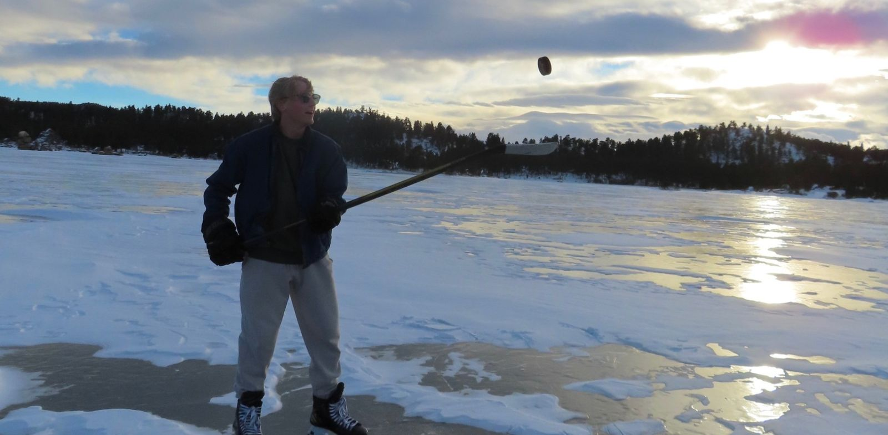
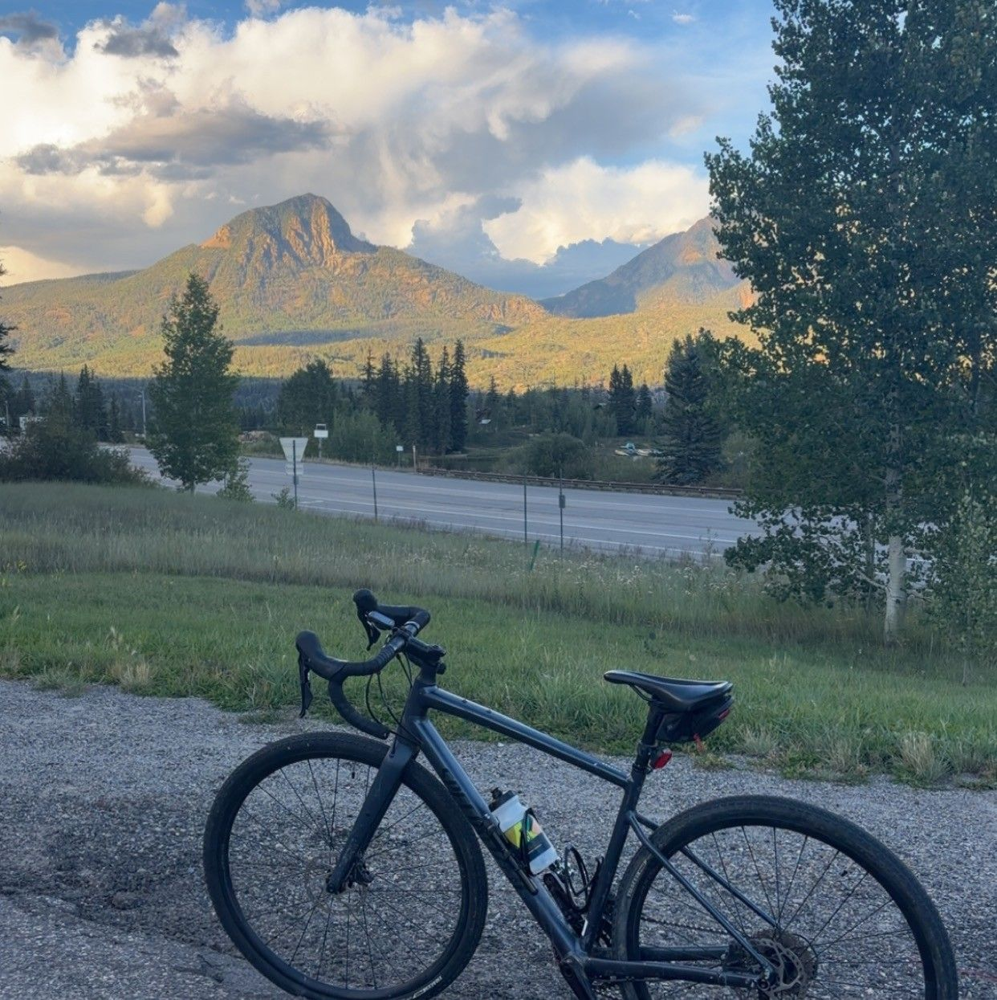
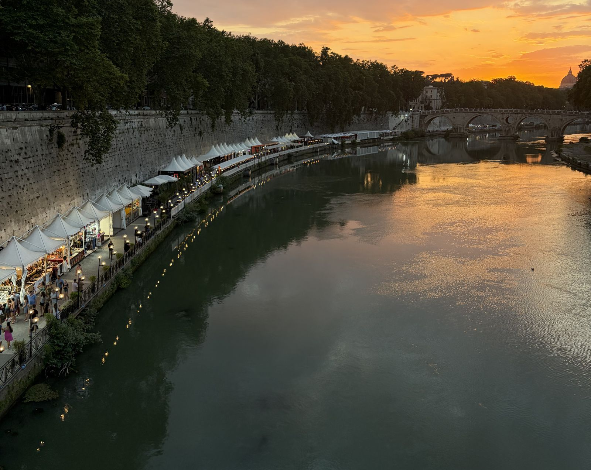

My life
Outside of my professional and academic life, I spend much of my free time outdoors or picking up new hobbies.
Hockey
For most of my life, my main sport has been hockey. I have played on many teams in multiple states, but I will always find time to spend on the ice. For a few summers, I had the opportunity to help coach the youth programs in Albuquerque in exchange for more access to the ice. Now, I play when I can and enjoy going to the ponds in the winter.

Hobbies
Since moving back to Colorado for school, I have spent much more time finding new outdoor hobbies. I have taken up fly fishing and downhill biking, and love to spend my free time on the weekends playing pickleball or hiking.

Travel
I have always loved to travel and have gotten the opportunity to travel to many fun and unique places. Over this past summer, I was able to participate in a study abroad program to take Thermodynamics in Rome, Italy. This was a very exciting adventure where I was able to learn about other cultures, environments, and lifestyles while still taking classes.
